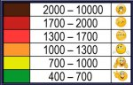
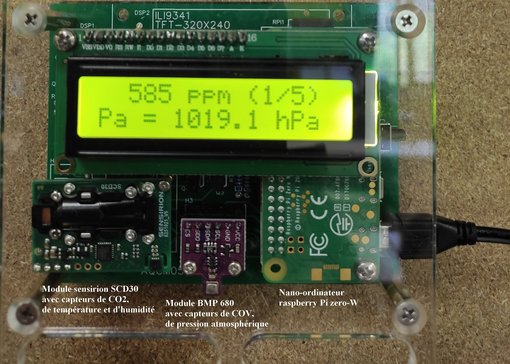

Ce projet a entièrement été conçu par Jérôme Candau, professeur d'électronique. Jean Michel Falzon professeur d'informatique, a mis en place des maquettes
prototypes de mesure de la qualité de l'air intérieur dans quelques salles de cours. (Maquettes référencées AQCMO5 assemblé par les élèves de seconde Système numérique)
Ces sondes mesurent et affichent les paramètres suivants :
• température
• humidité relative
• pression atmospérique
• taux de CO2
• taux de COV
Le taux de CO2 (dioxyde de carbone) est quelque peu moins connu du grand public.
Ce gaz, à l'inverse de son cousin proche le CO (monoxyde de carbone),
n'est pas toxique, sauf à de très fortes concentrations.
Le taux de CO2 dans "l'air pur" est actuellement estimé à 400 ppm (parties par million),
c'est-à-dire à 0,04%. Ce "taux de base" augmente inexorablement du fait des activités humaines. Il était
d'environ 280 ppm avant le début de l'ère industrielle. Bien que non dangereux,
dès que la concentration de ce gaz augmente, divers symptômes peuvent cependant se manifester : maux de tête,
difficulté de concentration, somnolence, etc.
Finalement, la mesure du taux de CO2 est surtout utilisée en tant qu'indicateur du confinement de l'air intérieur,
c'est-à-dire d'un renouvellement d'air insuffisant dans une pièce. En cette période de pandémie,
le confinement de l’air intérieur surexpose au risque sanitaire. Tous ces éléments incitent donc à surveiller le taux de CO2,
c'est l'objectif de ce projet !
taux de COV :Le terme COV correspond aux composés organiques volatils,
des gaz à effet de serre provenant généralement de l'ameublement (peinture, colle, vernis),
des produits d'entretien, ainsi que des transports et de l'industrie.
Les plus connus sont les formaldéhyde, le benzène, et le toluène.
Mesurés en ppb (partie par milliard), les COV sont considérés comme dangereux et
peuvent altérer la santé à court terme (migraines) et à long terme : le formaldéhyde a été classé comme cancérogène
par le Centre International de Recherche sur le Cancer.

Voici les seuils de pollution COV correspondant aux couleurs des jauges :
Blanc / Très bon : 0-150 ppb
Jaune / Bon : 150-300 ppb
Orange / Moyen : 300-450 ppb
Rouge / Mauvais : 450-600 ppb.
Les capteurs prototypes sont à même d'émettre des alertes visuelles et sonores lorsque les taux de CO2 dépassent certains seuils.
Pour l'instant, seules les alertes lumineuses sont actives avec une périodicité de 10 minutes

Copyright Lycée Pierre Mendes France - Mentions légales - Crédits